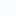

<!doctype html>
<html lang="en">
    <head>
        <meta charset="utf-8">
        <meta http-equiv="X-UA-Compatible" content="IE=edge">
        <meta name="viewport" content="initial-scale=1,user-scalable=no,maximum-scale=1,width=device-width">
        <meta name="mobile-web-app-capable" content="yes">
        <meta name="apple-mobile-web-app-capable" content="yes">
        <link rel="stylesheet" href="css/leaflet.css"><link rel="stylesheet" href="css/L.Control.Locate.min.css">
        <link rel="stylesheet" href="css/qgis2web.css"><link rel="stylesheet" href="css/fontawesome-all.min.css">
        <style>
        html, body, #map {
            width: 100%;
            height: 100%;
            padding: 0;
            margin: 0;
        }
        </style>
        <title>İlçelere Göre Genç Nüfus (%)</title>
    </head>
    <body>
        <div id="map">
        </div>
        <script src="js/qgis2web_expressions.js"></script>
        <script src="js/leaflet.js"></script><script src="js/L.Control.Locate.min.js"></script>
        <script src="js/leaflet.rotatedMarker.js"></script>
        <script src="js/leaflet.pattern.js"></script>
        <script src="js/leaflet-hash.js"></script>
        <script src="js/Autolinker.min.js"></script>
        <script src="js/rbush.min.js"></script>
        <script src="js/labelgun.min.js"></script>
        <script src="js/labels.js"></script>
        <script src="data/lelereGreGenNfus_1.js"></script>
        <script>
        var highlightLayer;
        function highlightFeature(e) {
            highlightLayer = e.target;

            if (e.target.feature.geometry.type === 'LineString') {
              highlightLayer.setStyle({
                color: '#f5c60a',
              });
            } else {
              highlightLayer.setStyle({
                fillColor: '#f5c60a',
                fillOpacity: 1
              });
            }
        }
        var map = L.map('map', {
            zoomControl:true, maxZoom:11, minZoom:9
        })
        var hash = new L.Hash(map);
        map.attributionControl.setPrefix('<a href="https://github.com/tomchadwin/qgis2web" target="_blank">qgis2web</a> &middot; <a href="https://leafletjs.com" title="A JS library for interactive maps">Leaflet</a> &middot; <a href="https://qgis.org">QGIS</a>');
        var autolinker = new Autolinker({truncate: {length: 30, location: 'smart'}});
        L.control.locate({locateOptions: {maxZoom: 19}}).addTo(map);
        var bounds_group = new L.featureGroup([]);
        function setBounds() {
            if (bounds_group.getLayers().length) {
                map.fitBounds(bounds_group.getBounds());
            }
        }
        map.createPane('pane_CartoLight_0');
        map.getPane('pane_CartoLight_0').style.zIndex = 400;
        var layer_CartoLight_0 = L.tileLayer('http://a.basemaps.cartocdn.com/light_all/{z}/{x}/{y}.pn', {
            pane: 'pane_CartoLight_0',
            opacity: 1.0,
            attribution: '',
            minZoom: 9,
            maxZoom: 11,
            minNativeZoom: 0,
            maxNativeZoom: 22
        });
        layer_CartoLight_0;
        map.addLayer(layer_CartoLight_0);
        function pop_lelereGreGenNfus_1(feature, layer) {
            layer.on({
                mouseout: function(e) {
                    for (i in e.target._eventParents) {
                        e.target._eventParents[i].resetStyle(e.target);
                    }
                },
                mouseover: highlightFeature,
            });
            var popupContent = '<table>\
                    <tr>\
                        <th scope="row">İlçe</th>\
                        <td>' + (feature.properties['İlce'] !== null ? autolinker.link(feature.properties['İlce'].toLocaleString()) : '') + '</td>\
                    </tr>\
                    <tr>\
                        <th scope="row">Toplam Hasar</th>\
                        <td>' + (feature.properties['toplam_has'] !== null ? autolinker.link(feature.properties['toplam_has'].toLocaleString()) : '') + '</td>\
                    </tr>\
                    <tr>\
                        <th scope="row">Nüfus</th>\
                        <td>' + (feature.properties['pop_TUIK'] !== null ? autolinker.link(feature.properties['pop_TUIK'].toLocaleString()) : '') + '</td>\
                    </tr>\
                    <tr>\
                        <th scope="row">0-24 Yaş Grubu (%)</th>\
                        <td>' + (feature.properties['pop_young_'] !== null ? autolinker.link(feature.properties['pop_young_'].toLocaleString()) : '') + '</td>\
                    </tr>\
                    <tr>\
                        <th scope="row">24-60 Yaş Grubu (%)</th>\
                        <td>' + (feature.properties['pop_mid_ra'] !== null ? autolinker.link(feature.properties['pop_mid_ra'].toLocaleString()) : '') + '</td>\
                    </tr>\
                    <tr>\
                        <th scope="row">+60 Yaş Grubu (%)</th>\
                        <td>' + (feature.properties['pop_elder_'] !== null ? autolinker.link(feature.properties['pop_elder_'].toLocaleString()) : '') + '</td>\
                    </tr>\
                </table>';
            layer.bindPopup(popupContent, {maxHeight: 400});
        }

        function style_lelereGreGenNfus_1_0(feature) {
            if (feature.properties['pop_young_'] >= 37.000000 && feature.properties['pop_young_'] <= 41.666667 ) {
                return {
                pane: 'pane_lelereGreGenNfus_1',
                opacity: 1,
                color: 'rgba(255,255,255,1.0)',
                dashArray: '',
                lineCap: 'butt',
                lineJoin: 'miter',
                weight: 1.0, 
                fill: true,
                fillOpacity: 1,
                fillColor: 'rgba(247,251,255,1.0)',
                interactive: true,
            }
            }
            if (feature.properties['pop_young_'] >= 41.666667 && feature.properties['pop_young_'] <= 45.000000 ) {
                return {
                pane: 'pane_lelereGreGenNfus_1',
                opacity: 1,
                color: 'rgba(255,255,255,1.0)',
                dashArray: '',
                lineCap: 'butt',
                lineJoin: 'miter',
                weight: 1.0, 
                fill: true,
                fillOpacity: 1,
                fillColor: 'rgba(115,179,216,1.0)',
                interactive: true,
            }
            }
            if (feature.properties['pop_young_'] >= 45.000000 && feature.properties['pop_young_'] <= 53.000000 ) {
                return {
                pane: 'pane_lelereGreGenNfus_1',
                opacity: 1,
                color: 'rgba(255,255,255,1.0)',
                dashArray: '',
                lineCap: 'butt',
                lineJoin: 'miter',
                weight: 1.0, 
                fill: true,
                fillOpacity: 1,
                fillColor: 'rgba(8,48,107,1.0)',
                interactive: true,
            }
            }
        }
        map.createPane('pane_lelereGreGenNfus_1');
        map.getPane('pane_lelereGreGenNfus_1').style.zIndex = 401;
        map.getPane('pane_lelereGreGenNfus_1').style['mix-blend-mode'] = 'normal';
        var layer_lelereGreGenNfus_1 = new L.geoJson(json_lelereGreGenNfus_1, {
            attribution: '',
            interactive: true,
            dataVar: 'json_lelereGreGenNfus_1',
            layerName: 'layer_lelereGreGenNfus_1',
            pane: 'pane_lelereGreGenNfus_1',
            onEachFeature: pop_lelereGreGenNfus_1,
            style: style_lelereGreGenNfus_1_0,
        });
        bounds_group.addLayer(layer_lelereGreGenNfus_1);
        map.addLayer(layer_lelereGreGenNfus_1);
            var title = new L.Control();
            title.onAdd = function (map) {
                this._div = L.DomUtil.create('div', 'info');
                this.update();
                return this._div;
            };
            title.update = function () {
                this._div.innerHTML = '<h5>İlçelere Göre Genç Nüfus (%)</h5>';
            };
            title.addTo(map);
            var abstract = new L.Control({'position':'bottomright'});
            abstract.onAdd = function (map) {
                this._div = L.DomUtil.create('div',
                'leaflet-control abstract');
                this._div.id = 'abstract'

                    abstract.show();
                    return this._div;
                };
                abstract.show = function () {
                    this._div.classList.remove("abstract");
                    this._div.classList.add("abstractUncollapsed");
                    this._div.innerHTML = 'Son Güncellenme Tarihi: 01.03.2023';
            };
            abstract.addTo(map);
        var baseMaps = {};
        L.control.layers(baseMaps,{'İlçelere Göre Genç Nüfus (%)<br /><table><tr><td style="text-align: center;"></td><td>37 - 41,7</td></tr><tr><td style="text-align: center;"></td><td>41,7 - 45</td></tr><tr><td style="text-align: center;"></td><td>45 - 53</td></tr></table>': layer_lelereGreGenNfus_1,"Carto Light": layer_CartoLight_0,}).addTo(map);
        setBounds();
        var i = 0;
        layer_lelereGreGenNfus_1.eachLayer(function(layer) {
            var context = {
                feature: layer.feature,
                variables: {}
            };
            layer.bindTooltip((layer.feature.properties['İlce'] !== null?String('<div style="color: #000000; font-size: 7pt; font-family: \'Open Sans\', sans-serif;">' + layer.feature.properties['İlce']) + '</div>':''), {permanent: true, offset: [-0, -16], className: 'css_lelereGreGenNfus_1'});
            labels.push(layer);
            totalMarkers += 1;
              layer.added = true;
              addLabel(layer, i);
              i++;
        });
        resetLabels([layer_lelereGreGenNfus_1]);
        map.on("zoomend", function(){
            resetLabels([layer_lelereGreGenNfus_1]);
        });
        map.on("layeradd", function(){
            resetLabels([layer_lelereGreGenNfus_1]);
        });
        map.on("layerremove", function(){
            resetLabels([layer_lelereGreGenNfus_1]);
        });
        </script>
    </body>
</html>
